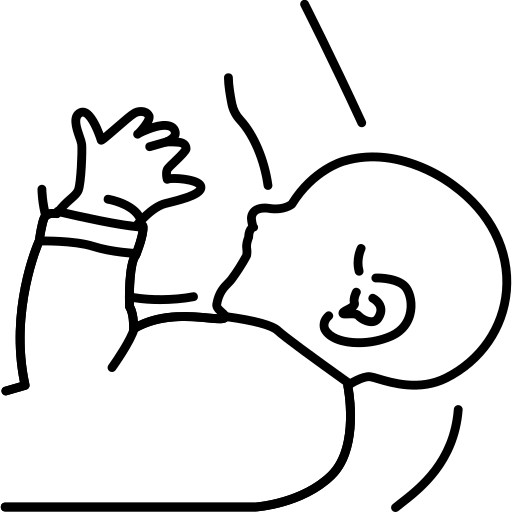
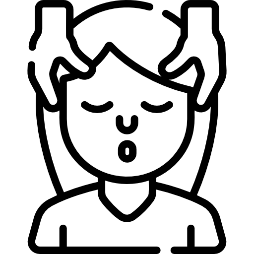
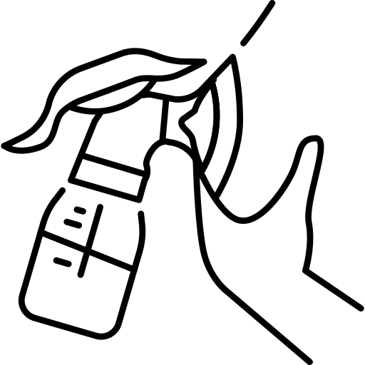
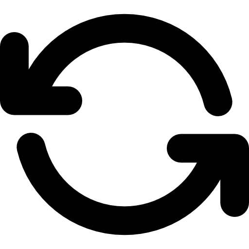
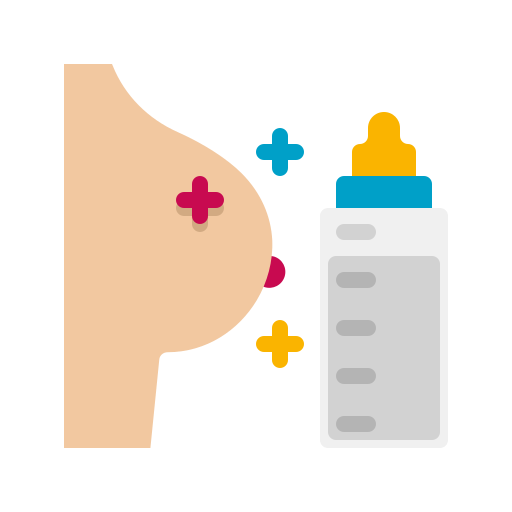

Consejos para la lactancia
Para iniciar la lactancia materna
-
Busca un lugar cómodo:
Ecuentra un espacio tranquilo y cómodo para alimentar a tu bebé, especialmente durante las primeras semanas.

-
Aprende las posiciones correctas:
Experimenta con posiciones hasta encontrar la que sea más cómoda para ti y tu bebé.
-
Asegúrate de un buen agarre:
Ayuda a tu bebé a abrir bien la boca y asegúrate de que su mentón esté tocando tu pecho. Esto facilita la extracción de leche y evita molestias.
 -
Confía en tu cuerpo:
Tu cuerpo produce la cantidad de leche que tu bebé necesita. La demanda constante ayudará a ajustar la producción.
-
Pide ayuda si la necesitas:
No dudes en consultar con un asesor de lactania o un médico si tienes dudas o dificultades como dolor o problemas de agarre.

Para mantener la lactancia
-
Amamanta a demanda:
Alimenta a tu bebé cuando lo pida, sin horarios estrictos, espcialmente durante los primeros meses.
-
Hidrátate y come bien:
Mantén una dieta equilibrada y bebe suficiente agua para segurarte de que estás produciendoleche adecuadamente.


-
Descansa tanto como puedas:
Aunque puede ser difícil, intenta dormir cuando tu bebé duerma para evitar agotarte.

-
Evita el estrés:
La lactancia puede ser un desafío emocional. Rodéate de apoyo y recuerda que estás haciendo lo mejor para tu bebé.

-
Usa sacaleches si es necesario:
Si necesitas ausentarte, puedes extraer tu leche y almacenarla para alimentar a tu bebé más tarde.

Para resolver problemas comunes
-
Dolor en los pezones:
Aplica lanolina o un poco de tu propia leche para aliviar las molestas. Asegúrate de que el agarre sea correcto.
-
Ingurgitación Mamaria:
Si sientes tus pechos demasiado llenos, extrae un poco de leche antes de amamantar para facilitar el proceso.
-
Bajo suministro de leche:
Amamanta con más frecuencia, incluso si es por periodos cortos, para estimular la producción.
-
Bebé somnoliento
Si tu bebé se queda dormido mientras come, intenta frotarle suavementa la planta del pie o cambiar de posición para mantarnerlo despierto.
 -
Confusión de pezón:
Si alternas entre pecho y biberón, asegúrate de usar tetinas diseñadas para imitar el flujo del pecho.

Para prologar la lactancia
-
Introduce alimentos complementarios con cuidado:
A partir de los 6 meses, introduce sólidos mientras continúas con la lactancia.
-
Disfruta el momento:
La lactancia no solo nutre físicamente a tu bebé, también fortalace el vínculo emocional.

-
Se pacicente durante el destete
Reduce las tomas poco a poco y ofrece alternativas como abrazos y tiempo de calidad.